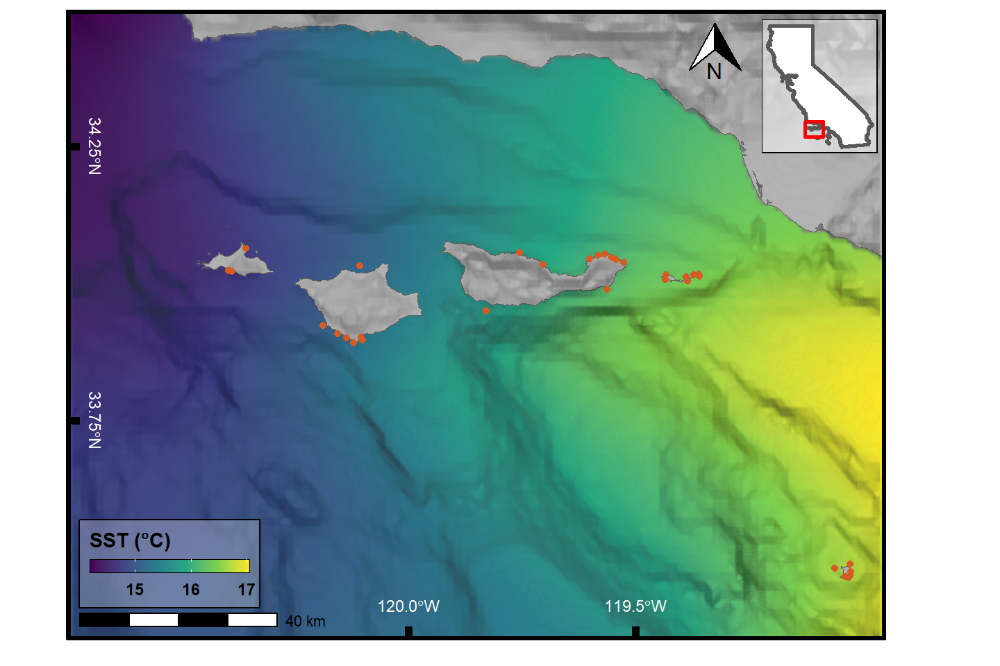

Libraries
Show code
library(tidyverse)
library(lubridate)
library(sf)
library(rerddap)
library(marmap)
library(raster)
library(cowplot)
library(ggspatial)
library(gganimate)
library(gifski)Geographic Data
Show code
ca <- read_sf("CA.gpkg")
Site_Info <- read_csv("Site_Info.csv")Griddap Query
Show code
lat_min <- 33.35
lat_max <- 34.5
lon_min <- -120.75
lon_max <- -118.95
lat <- c(lat_min, lat_max)
lon <- c(lon_min, lon_max)
tm <- c(
"2009-01-02T12:00:00Z",
'2009-12-30T12:00:00Z'
)
SST <- 'jplMURSST41'
field <- 'analysed_sst'
murSST_west <- griddap(
x = SST,
latitude = lat,
longitude = lon,
time = tm,
fields = field
)
sst <- tibble(murSST_west$data) %>%
group_by(lat, lon) %>%
summarise(sst = mean(analysed_sst))Bathymetry Querry
Show code
ca_bath <- marmap::getNOAA.bathy(
lon1 = lon_min - 1,
lon2 = lon_max + 1,
lat1 = lat_min - 1,
lat2 = lat_max + 1,
resolution = 1
) %>%
marmap::as.raster() %>%
raster::rasterToPoints() %>%
base::as.data.frame() Make California Map for Inset
Show code
box <- sf::st_polygon(
x = list(
rbind(
c(lon_min, lat_max),
c(lon_max, lat_max),
c(lon_max, lat_min),
c(lon_min, lat_min),
c(lon_min, lat_max)
)
)
) %>% st_sfc(crs = 4326)
C <- ggplot() +
geom_sf(data = ca, fill = "white", size = 1) +
geom_sf(data = box, fill = NA, size = 1, color = 'red') +
theme_void() +
theme(panel.border = element_rect(fill = NA),
panel.background = element_rect(fill = alpha("white", .5)))Plot Static Map
Show code
main.plot <- ggplot() +
geom_raster(data = sst, aes(x = lon, y = lat, fill = sst), interpolate = T) +
scale_fill_viridis_c(option = 'viridis', guide = guide_colorbar(
direction = "horizontal",frame.colour = "black",
title.position = "top", barheight = unit(.25, 'cm'))) +
geom_sf(data = ca, fill = "grey70", color = "grey40", size = .1) +
geom_contour(data = ca_bath, aes(x = x, y = y, z = layer),
breaks = seq(min(ca_bath$layer), max(ca_bath$layer), by = 5),
color = "black", alpha = .01, size = 1) +
scale_x_continuous(limits = lon, expand = c(0,0), breaks = c(-120, -119.5)) +
scale_y_continuous(limits = lat, expand = c(0,0), breaks = c(33.75, 34.25)) +
geom_point(data = Site_Info, aes(x = Longitude, y = Latitude),
color = '#d55b23', show.legend = F, inherit.aes = F) +
scale_color_viridis_d(option = 'magma', begin = .2, end = .8, limits = force) +
labs(fill = "SST (\u00B0C)", x = NULL, y = NULL) +
annotation_scale(location = "bl") +
annotation_north_arrow(which_north = TRUE, location = "tr", pad_x = unit(2.75, "cm"),
height = unit(1, "cm"), width = unit(1, "cm")) +
theme_classic() +
theme(legend.position = c(0.125, 0.12),
legend.title = element_text(face = 'bold'),
legend.text = element_text(face = 'bold'),
legend.background = element_rect(fill = alpha("white", .25), colour = 'black'),
axis.ticks.length = unit(-0.25, "cm"),
axis.ticks = element_line(color = "black", size = 2),
axis.text.y = element_text(hjust = .5, margin = margin(0,-.7,0,-.5, unit = 'cm'),
face = 'bold', color = "white", angle = 270),
axis.text.x = element_text(vjust = 5, margin = margin(-0.5,0,0.5,0, unit = 'cm'),
face = 'bold', color = "white"),
panel.border = element_rect(color = "black", size = 2, fill = NA)
)
ggdraw() +
draw_plot(main.plot) +
draw_plot(C, x = 0.72, y = .77, width = .2, height = .2)
Plot Animated Map
Showing 2014-2016 to highlight the 2015-2016 El Nino.
Show code
redo <- FALSE
if (!file.exists("sst.gif") | redo){
tm <- c(
"2014-01-01T12:00:00Z",
'2016-12-30T12:00:00Z'
)
murSST_west <- griddap(
x = SST,
latitude = lat,
longitude = lon,
time = tm,
fields = field
)$data %>%
mutate(date_time = lubridate::as_datetime(time),
date = lubridate::date(date_time)) %>%
group_by(date, lon, lat) %>%
summarise(sst = analysed_sst)
p1 <- ggplot() +
geom_raster(data = murSST_west, aes(x = lon, y = lat, fill = sst), interpolate = T) +
scale_fill_viridis_c(option = 'viridis', guide = guide_colorbar(
direction = "horizontal",frame.colour = "black",
title.position = "top", barheight = unit(.25, 'cm'))) +
geom_sf(data = ca, fill = "grey70", color = "grey40", size = .1) +
geom_contour(data = ca_bath, aes(x = x, y = y, z = layer),
breaks = seq(min(ca_bath$layer), max(ca_bath$layer), by = 5),
color = "black", alpha = .01, size = 1) +
scale_x_continuous(limits = lon, expand = c(0,0), breaks = c(-120, -119.5)) +
scale_y_continuous(limits = lat, expand = c(0,0), breaks = c(33.75, 34.25)) +
scale_color_viridis_d(option = 'magma', begin = .2, end = .8, limits = force) +
labs(fill = "SST (\u00B0C)",
title = "{frame_time}",
x = NULL, y = NULL) +
annotation_scale(location = "bl") +
annotation_north_arrow(which_north = TRUE, location = "tr", #pad_x = unit(2.75, "cm"),
height = unit(1, "cm"), width = unit(1, "cm")) +
theme_classic() +
theme(legend.position = c(0.125, 0.12),
legend.title = element_text(face = 'bold'),
legend.text = element_text(face = 'bold'),
legend.background = element_rect(fill = alpha("white", .25), colour = 'black'),
axis.ticks.length = unit(-0.25, "cm"),
axis.ticks = element_line(color = "black", size = 2),
axis.text.y = element_text(hjust = .5, margin = margin(0,-.7,0,-.5, unit = 'cm'),
face = 'bold', color = "white", angle = 270),
axis.text.x = element_text(vjust = 5, margin = margin(-0.5,0,0.5,0, unit = 'cm'),
face = 'bold', color = "white"),
panel.border = element_rect(color = "black", size = 2, fill = NA)) +
gganimate::transition_time(date)
gganimate::animate(p1, width = 720, height = 480,
# renderer = av_renderer(),
nframes = 100, fps = 10)
anim_save(filename = "sst.gif", animation = last_animation())
}